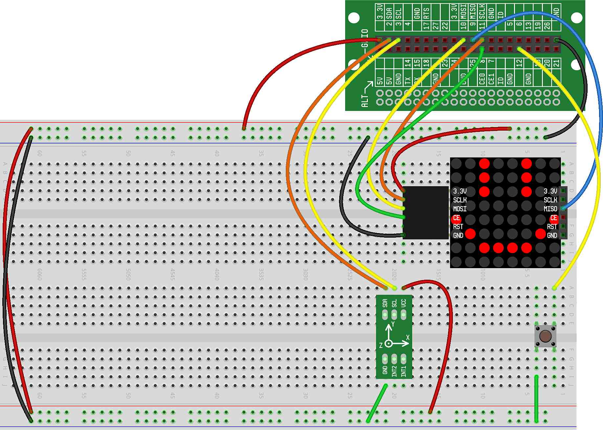

In this project, we continue the development of our Alien Intruders game by building the complete circuit, writing our initialization code and writing the code to do some basic LED Matrix drawing.
In our previous project, we discussed the pseudo-code for our Alien Intruders game. Before we start writing the code, we need to complete the circuit for the game.
For our Alien Intruders game, we'll be using the LED Matrix for our display, the Accelerometer to control the left/right movement of the ship and a button to fire missiles.
If you completed the previous projects with the LED Matrix and the Accelerometer, your breadboard is already configured mostly how it needs to be. Though, at very least, you'll probably need to add a button to the configuration (we're going to assume that the button is wired to GPIO7 for this project).
Here is what the breadboard should look like once it's correctly wired: 
Building on the pseudo-code we wrote in the last project, let's initialize the framebuffer and write a single dot to the LED Matrix (we'll consider this our spaceship for now). While none of this is new, it will allow us to verify that the LED Matrix is working properly and will get some of our initialization code out of the way.
Here's what our initialization code should look like for the framebuffer:
Next, we'll write some code to place a single dot (our current spaceship) on the LED Matrix:
If you run the program at this point, you should see a dot on the LED Matrix at coordinates (3,0).
Here is the full code for our game at this point: